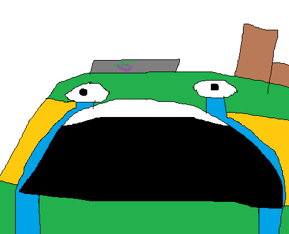
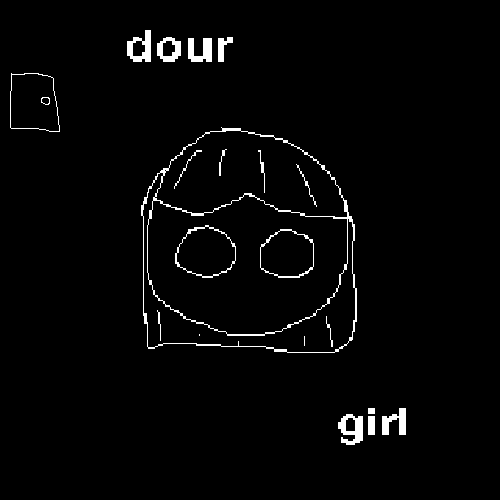
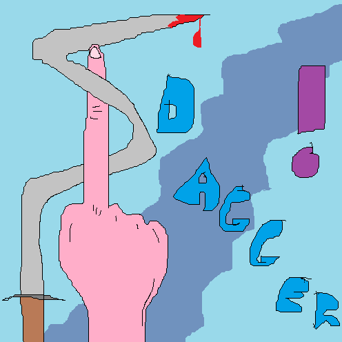

| Image |
Title & Date |
Description |
|
Wall Of Dabbers (12/16/20) |
I made a Twitter post where people could reply for their OC or any character to be added to the wall of dabbers. This was the result. |
|  |
VF Crying (11/22/20) |
I think I drew this after losing my perfect game in Scram School. I'm pretty sure I subconsciously plagiarized this exact face from this cartoon by Jonni Phillips. |
 |
The Kissing Guy (11/7/20) |
The last ever sighting of The Kissing Guy. Presumed dead. |
|
Money Machine (9/27/20) |
Money Machine makes their grand debut in the form of a Camp Live 7 signup. Yes, they are based on the 100 gecs song. |
|
Fabrica De Tartas (9/27/20) |
Fabrica de tartas. |
|
VF Cake (9/27/20) |
The question that plagued humanity for eons... What if Vegetable Factory was a cake? Well, here is your answer. |
|
Those Eggs Aren't Dippy (8/18/20) |
This marks the end of the micropop drawings. I'm pretty sure this one is plagarized from the patreon cover for this song, but I don't remember it too clearly. |
 |
Crocodile Tears (8/18/20) |
The tears in this image were supposed to shift from a teardrop into a crocodile, but I got extremely frustrated trying to draw a crocodile so I scrapped that idea. |
|
Choice (8/18/20) |
Description |
|
Benchmarks (8/18/20) |
The MSPaint crayon tool changed my life. |
|
Polarizer (8/17/20) |
This is my favorite drawing from this short-lived project. |
|
Get A Hold Of Yourself (8/17/20) |
I'm not sure why I chose to draw a seal balancing a ball for this song. I guess it was just the vibe. |
|
I Heard Ya (8/17/20) |
I traced the ear from some stock emoji photo. |
|  |
Dour Girl (8/17/20) |
The girl in this drawing belongs to me, so back off unless you want to get a serious ass whooping. |
|
Junk Bat (8/17/20) |
I forgot what a bat looked like when drawing this so I just drew it from memory. I could've just looked up one for refrence, but I'm too cool for that. |
|
$4.99 (8/17/20) |
As of writing this, I am halfway done with my cheeseburger. |
|
Order (8/17/20) |
Thus began my short-lived journey of attempting to draw a cover for every micropop song. |
|
Vegetable Factory (8/10/20) |
The first ever drawing of Vegetable Factory, used to signup for season 2 of Scram School. |
|
Scram School Season 1 (8/7/20) |
A nice little group portrait of every contestant who competed in Scram School season 1. |
|  |
Dagger (6/20/20) |
The cover for my old song called "Dagger". |
|
Cheesecake Factory (5/1/20) |
The first ever drawing of Cheesecake Factory I could find, used to signup for season 1 of Scram School. |
 |
Tragic (3/28/20) |
The cover for my old song called "Tragic". |
 |
Peeled (3/25/20) |
The cover for my old song called "Peeled". |
|
Kirby (2/6/20) |
This image caused COVID. |
|
Crop Man (2/1/20) |
The actual first drawing of Crop Man which was used as my spotify artist profile picture. |
 |
help i will die if i lose balance (2020) |
Another drawing that comes out of my middle school graphic design sketchbook. It is my f**ked up and evil depiction of an image I saw of a cat on a tightrope playing the guitar. |